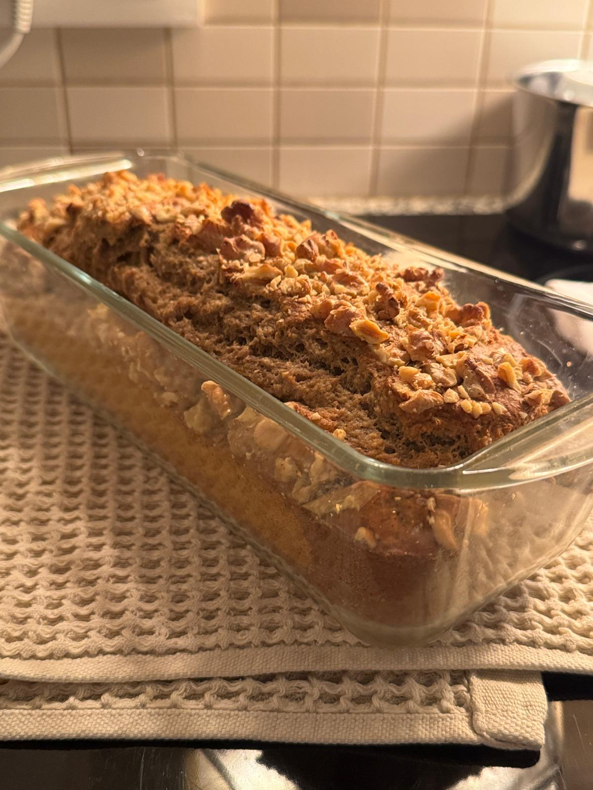

Banana Bread Fit

Description:
Healthy low sugar but delicious banana bread :)
- 100 gr Oat flour
- 50gr Espelta Flour
- 50gr Whole Flour
- 4 Eggs
- 30gr Sugar
- 30gr Vanilla Veggan Powder
- Cinemon
- 35gr non salty Butter
- 50gr of Nuts
- 20gr Baking Powder
How To Cook It
- Pre-heat the hoven at 180C
- Mix well the eggs and sugar
- Add the flours and protein powder
- Smash the bananas with the butter and the cinemon and add to the mixture
- Mix everything well, until a uniform mass
- Add the baking powder and mix a bit more
- Put in the mold and add the nuts on top
- Take to the hoven for 40 minutes